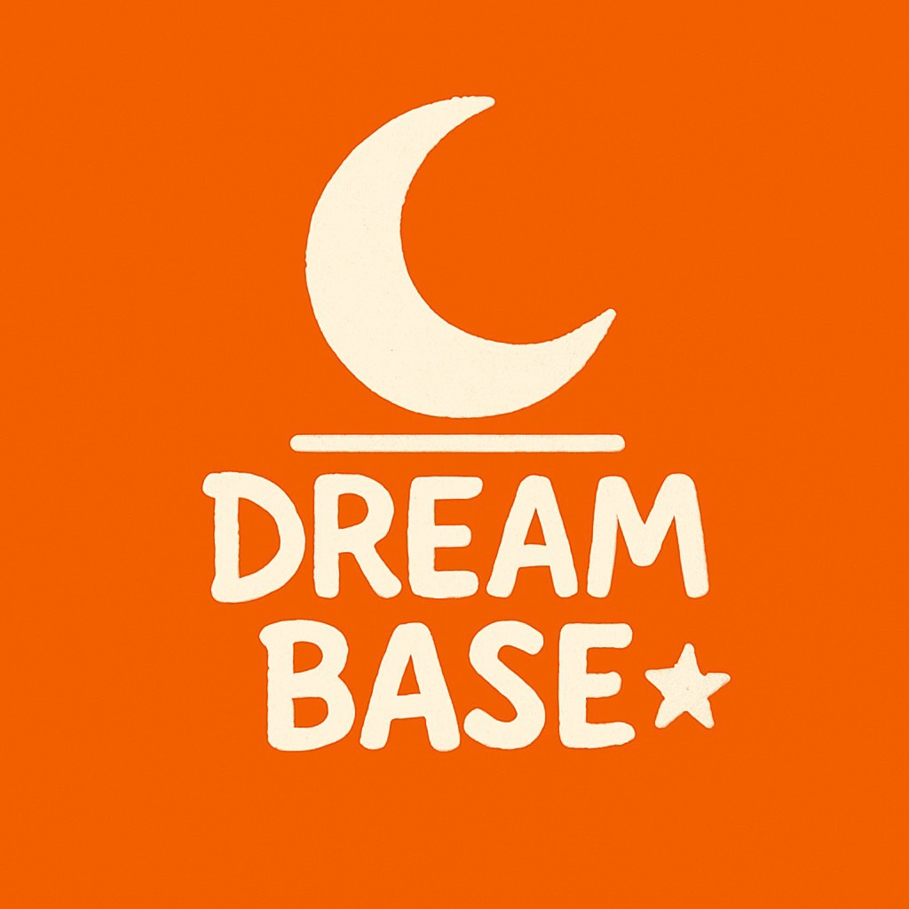
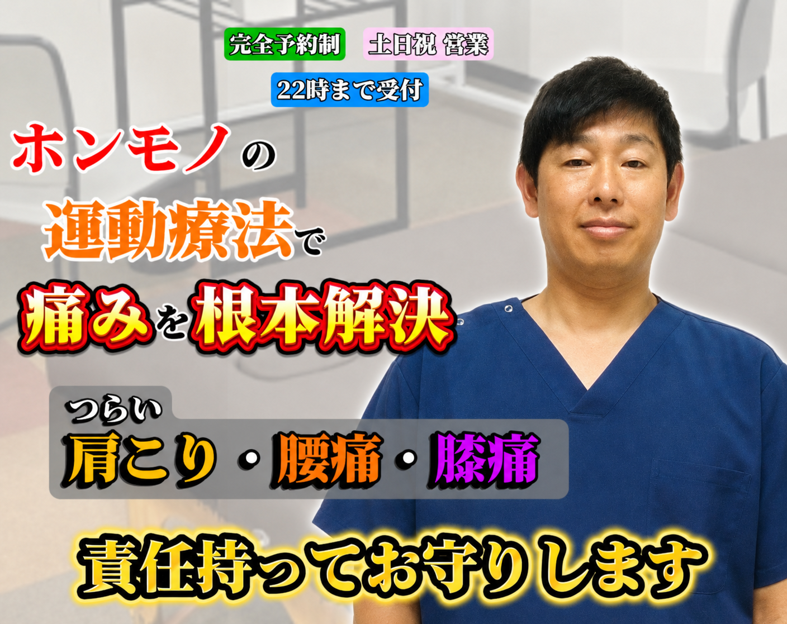
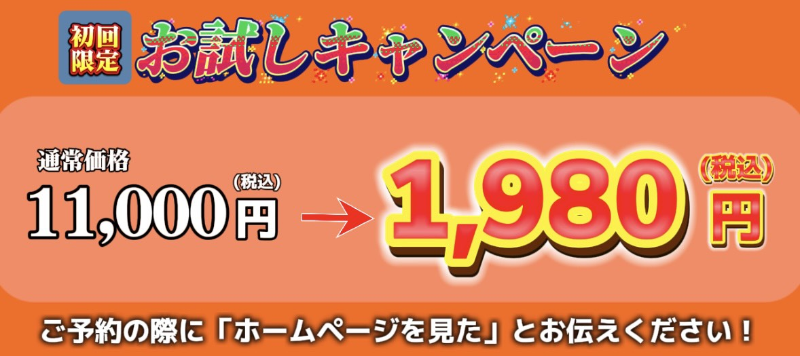
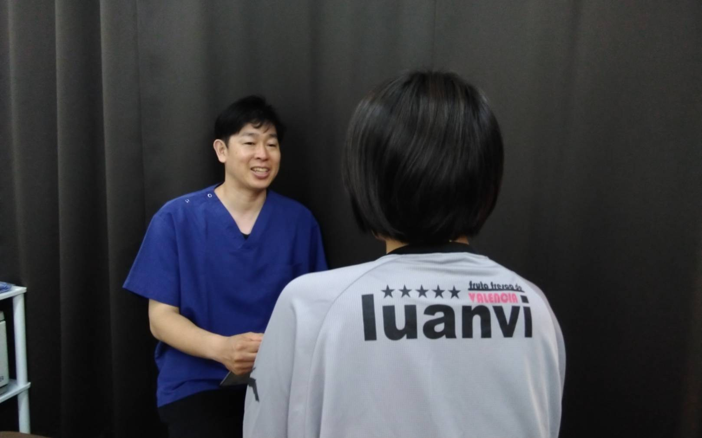
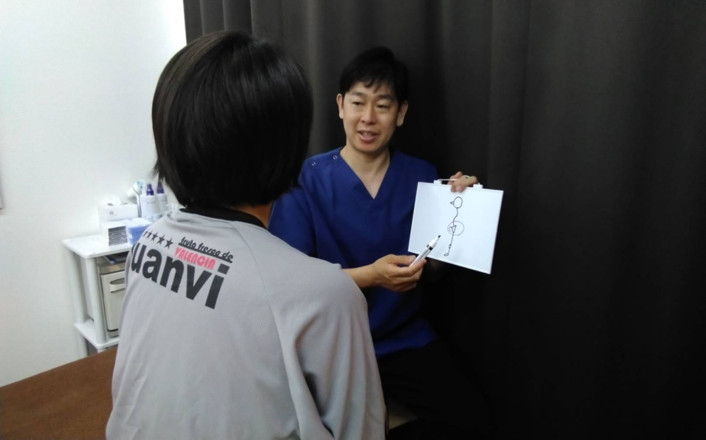
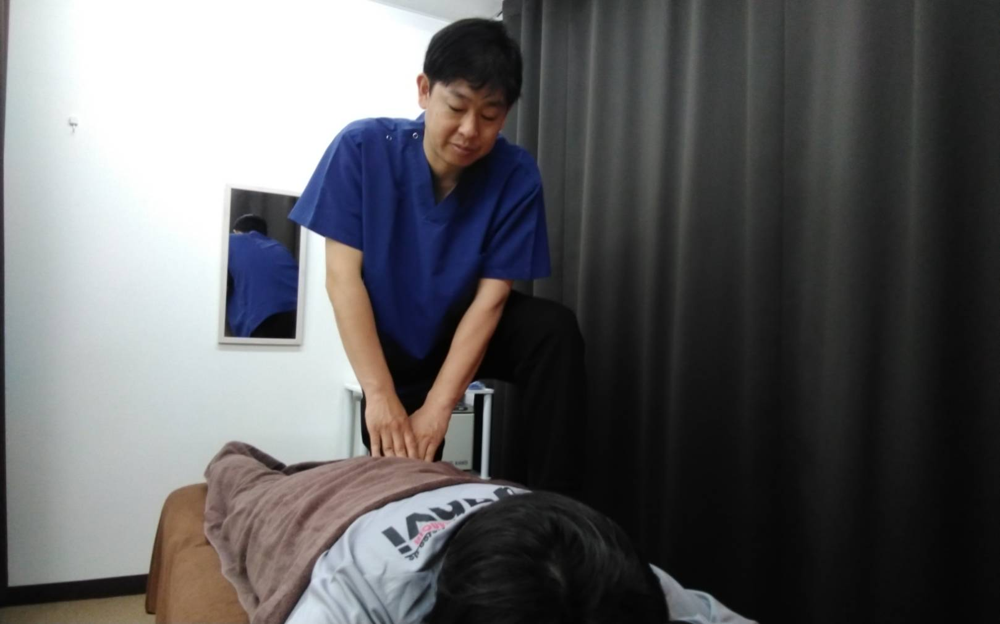
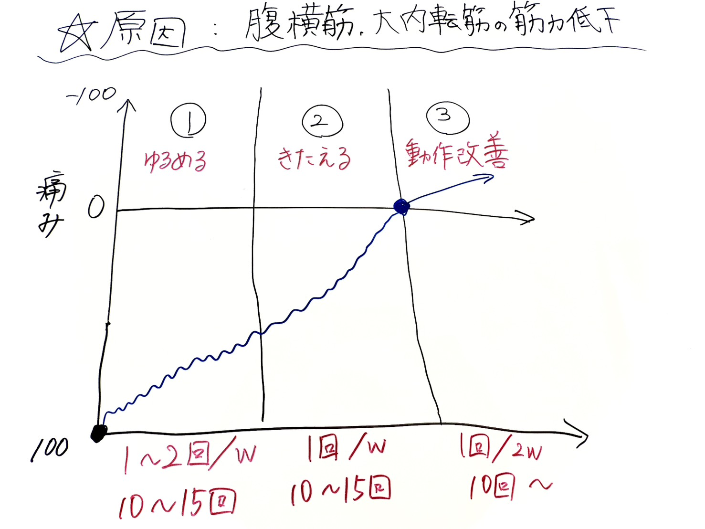
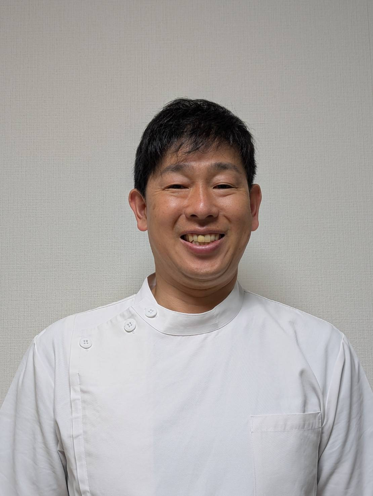

ご予約・お問い合わせ

あなたの身体を、"過去最高"に

あなたの身体を、"過去最高"に

当院は、 運動療法を用いた根本改善 をコンセプトとした整体院です。
その場の痛みを和らげるだけでなく、「なぜ痛みが繰り返されるのか」を徹底して分析し、
身体の使い方・姿勢・筋力バランスを整えることで、痛みの原因から改善を目指します。
多くの方が悩む 肩こり・腰痛・膝痛 は、筋肉の固さだけでなく、
身体の動かし方の癖や、日常生活での負担の積み重ねが大きく関わっています。
当院ではこれらを正しく評価し、手技と運動療法を組み合わせることで、
症状の再発を防ぎながら「痛む前より動きやすい身体」へ導きます。
初めての方でも安心して取り組める、丁寧で分かりやすい施術と指導を心がけています。
あなたの身体に本当に必要なケアを通して、長く健康を保てる身体づくりをサポートします。

痛みのことはもちろん、日々の生活で気になっていることや
不安に感じていることを、じっくりとお伺いします。
また、もし今の状態が続いたら…といったご心配や、
改善した先にどんな身体になりたいかという理想についてもお聞かせください。
お話しを大切にし、一人ひとりに合った施術としていきます。

問診でお聞きした内容をもとに、痛みや不調を引き起こしていると考えられる原因をわかりやすくお伝えします。
多くの方に共通する身体のクセや負担のかかり方を説明し、今の状態からどのように改善へ向かっていけるのか、具体的なポイントを丁寧にご案内いたします。
ご不明な点があれば遠慮なくお尋ねください。

痛みのことはもちろん、日々の生活で気になっていることや不安に感じていることを、じっくりとお伺いします。
また、もし今の状態が続いたら…といったご心配や、改善した先にどんな身体になりたいかという理想についてもお聞かせください。
お話しを大切にし、一人ひとりに合った施術としていきます。

今後の施術方針や通院頻度についてご説明します。
ご自宅でできるセルフケアや生活習慣のアドバイスも行い、
痛みの再発を防ぐためのサポートをいたします。
何か不安なことがあれば、遠慮なくご相談ください。

痛みのことはもちろん、日々の生活で気になっていることや
不安に感じていることを、じっくりとお伺いします。
また、もし今の状態が続いたら…といったご心配や、
改善した先にどんな身体になりたいかという理想についてもお聞かせください。
お話しを大切にし、一人ひとりに合った施術としていきます。
問診でお聞きした内容をもとに、痛みや不調を引き起こしていると考えられる原因をわかりやすくお伝えします。
多くの方に共通する身体のクセや負担のかかり方を説明し、今の状態からどのように改善へ向かっていけるのか、具体的なポイントを丁寧にご案内いたします。
ご不明な点があれば遠慮なくお尋ねください。
痛みのことはもちろん、日々の生活で気になっていることや不安に感じていることを、じっくりとお伺いします。
また、もし今の状態が続いたら…といったご心配や、改善した先にどんな身体になりたいかという理想についてもお聞かせください。
お話しを大切にし、一人ひとりに合った施術としていきます。
今後の施術方針や通院頻度についてご説明します。
ご自宅でできるセルフケアや生活習慣のアドバイスも行い、
痛みの再発を防ぐためのサポートをいたします。
何か不安なことがあれば、遠慮なくご相談ください。

今まで訪問専門治療院として活動していましたが、寝たきりになったり、杖歩行、車イスでの生活を余儀なくされ、趣味や習いごとをやめなくてはいけなくなってしまった。
孫に会いにいけない、楽しみ、生きがいを失った方々を見てきました。そうなってからでは取り戻すのが難しいため、そうなる前に予防して、やりたいことをやる。
人生を楽しく過ごせるようにお手伝いがしたいと思い御縁がある田無に開業しました。
痛みを一次的に和らげる施術に限界を感じたため運動療法を専門的に学習し、機械的な治療よりも動作評価に基づく介入が根本改善に有効だと確信しました。
皆様に痛みの再発予防と身体機能を高める質の高いケアを届けたいと考えています。
〒188-0011
東京都西東京市田無町3-3-7 海老沢第一ビル505
〒188-0011 東京都西東京市田無町3-3-7 海老沢第一ビル505
駐車場なし（近隣のパーキングをご利用ください。）
西武新宿線 田無駅から徒歩7分
骨折 脱臼 捻挫 肉ばなれ
むち打ち 頚椎椎間板ヘルニア 寝違え
首こり 肩こり 筋緊張性頭痛
五十肩（四十肩）背中の痛み 猫背
腰痛 ぎっくり腰 坐骨神経痛
腰椎椎間板ヘルニア 脊柱管狭窄症
膝痛 変形性膝関節症 O脚 X脚
偏平足 外反母趾 内反小趾
野球肩 野球肘 テニス肘 ゴルフ肘
オスグッドシュラッター病
シンスプリント 足底筋膜炎 など